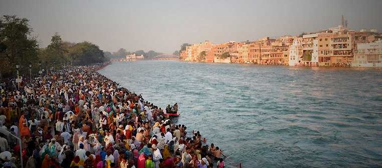

NORTH Indian Festivals
Click on Back to Home Page
Mata Murti ka mela is a pompous North Indian religious festival held in Badrinath, Uttar Pradesh. On this day Mata Murti, the mother of Badrinath, is worshipped zealously. The prayers include Maha Abhishek (holy bath), in the morning readings are done of Geeta Paths (chapters from Bhagwad Geeta), and the aarti takes place in the evening. After the pooja, sandalwood paste is applied to the idol. The villagers install colourful stalls and participate proactively in the fair. This festival is celebrated to honour River Ganga, which is supposed to have been gifted to earth by heaven on this day. Where: Badrinath, Uttarakhand, When: September |
Kumbh Mela is the biggest fair in India. It takes place every 12 years in four cities - Prayagraj (Allahabad), Haridwar, Ujjain and Nashik. The Kumbh Mela in Prayag being the major one is celebrated on a vast scale. Pilgrims from all over the country gather and pay homage to river Ganga. They take dips in the holy water to wash away their sins. Since this festival is celebrated only in 12 years, the government spends generously on the stalls, poojas, kirtans and pilgrimage facilities.
Where: Allahabad, Uttar Pradesh,When:Haridwar: March - AprilAllahabad: January - February
,Ujjain: April - May,Nashik: August - September,Upcoming dates: 2022 (Haridwar) |
Pushkar Mela is one of the most vibrant festivals in north India. It is celebrated extravagantly at the end of October or beginning of November, in Pushkar, Rajasthan. During this fair, pilgrims come to Pushkar from all over the country and worship Pushkar Lake. Apart from this, cattle races are held, and cattle trades take place. Various entertaining competitions such a biggest moustache challenge, bridal makeup challenge, etc. are conducted. |
| Rann Utsav takes place in the white sand of the Rann of Kutch in Gujarat every year from November to February. During this period, tents are set up, and the region is made in traditional Gujarati style. Educational programmes including folk dances, skits and others are displayed every evening, followed by bonfire night and lavish dining. Rann Utsav is one of the most vibrant festivals in India, which attracts numerous visitors from across the globe and displays the finest traditions of the state. |
Phulaich Festival is one of the most popular festivals in North India, celebrated in Kinnaur district of Himachal Pradesh, to commemorate the deceased. Phulaich, also known as Ookayang (oo: flower, Kayang: festival), is celebrated on the 16th day of Bhadrapada month (September - November). On this day, 10 Rajput men climb up the hill and pluck flowers that have just bloomed and their journey celebrated with drums and dances. When they return, the villagers dance joyfully and enact war scenes in memory of their ancestors. They decorate deities in beautiful ornaments and arrange for a procession. |